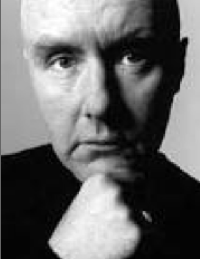

Written in 1993
Choose Life. Choose a job. Choose a career. Choose a family. Choose a fucking big television, choose washing machines, cars, compact disc players and electrical tin openers. Choose good health, low cholesterol, and dental insurance. Choose fixed interest mortgage repayments. Choose a starter home. Choose your friends. Choose leisurewear and matching luggage.
Choose a three-piece suit on hire purchase in a range of fucking fabrics. Choose DIY and wondering who the fuck you are on Sunday morning. Choose sitting on that couch watching mind-numbing, spirit-crushing game shows, stuffing fucking junk food into your mouth. Choose rotting away at the end of it all, pissing your last in a miserable home, nothing more than an embarrassment to the selfish, fucked up brats you spawned to replace yourselves.
But why would I want to do a thing like that? I chose not to choose life. I chose somethin' else. And the reasons? There are no reasons. Who needs reasons when you've got heroin?
Trainspotting was a bomb among other movies in 1994.
Trainspotting is a 1996 British black comedy film directed by Danny Boyle and starring Ewan McGregor, Ewen Bremner, Jonny Lee Miller, Kevin McKidd, Robert Carlyle, and Kelly Macdonald in her acting debut. Based on the novel of the same name by Irvine Welsh, the film was released in the United Kingdom on 23 February 1996.
Edinburgh heroin addict Mark Renton buys opium suppositories from dealer Mikey Forrester to help him quit. After his final hit, and a violent spell of diarrhea caused by cessation of heroin, he locks himself in his flat to endure the withdrawal period. Finding that his sex drive has returned, he leaves a club with a girl, Diane, and they have sex in her bedroom. In the morning, he realises that Diane is underage and that her "flatmates" are her parents. Diane threatens to reveal the encounter if he ends the relationship.
Renton and his friends, oafish but good-natured Spud and con artist Sick Boy, start using heroin again. His friend Tommy, a clean-cut athelete whose girlfriend has dumped him after a chain of events initiated by Renton, also begins using. Fellow addict Allison discovers that her infant daughter Dawn has died without the group noticing; all are horrified, especially Sick Boy, Dawn's father.
Renton and Spud are arrested for shoplifting. Spud goes to prison, but Renton avoids punishment by entering a drug interventions programme, where he is given methadone. Despite support from his family, Renton is desperate for a more substantial high and escapes to his drug dealer's flat. He nearly dies of an overdose, and his dealer sends him to hospital in a taxicab. Renton's parents lock him in his childhood bedroom to force him through withdrawal. Renton has hallucinations of Diane singing, his friends giving him advice, Dawn crawling on the ceiling, and a TV game show in which presenter Dale Winton asks Renton's parents questions about HIV.
Mark Renton: We would have injected vitamin C if only they had made it illegal!